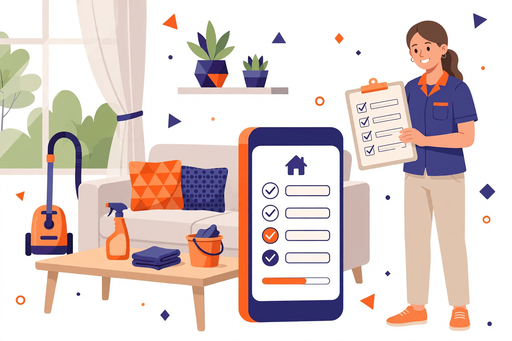

Meta Global AI Developer Hackathon
Sparkl — turnover cleanings, claimed in minutesA two-sided marketplace connecting vacation-rental hosts with cleaning professionals.
Hosts post a turnover cleaning once, pick a saved property or chat with an assistant, and get ranked cleaner suggestions with plain-language reasons.
Cleaners browse a ranked board, request a job or accept an offer — nothing is assigned without both sides agreeing — then coordinate in per-job chat and close out with mutual reviews .
Ranked matching
Two-way claiming
Realtime chat
Mutual reviews

How a job flows
1 Post Host chats or uses the form; price hint + checklist drafted.
2 Rank Both sides get ranked matches with reasons.
3 Claim Request or offer — accepted, never auto-assigned.
4 Chat Per-job realtime thread to confirm details.
5 Complete In progress → completed, tracked per role.
6 Review Mutual 1–5 star reviews feed future ranking.
How it's built
Expo + Expo Router — one codebase for iOS, Android, Web Fastify + tRPC — typed APIs; logic lives in services PostgreSQL + Drizzle — versioned migrations Shared Zod contracts — validated on both ends SSE chat, S3 uploads — presigned URLs, no proxy bytes 688 unit tests + green e2e — colocated Vitest, Playwright web
Meta AI inside
Job-post assistant — Muse Spark Open on Baseten; tool-using agent fills the draft, never posts Voice input — Muse Voice Transcribe on web and iOS Learns with use — saved answers ranked by host feedback Local-first dev — Muse Glimmer via Ollama; scripted fake for tests Brand assets — Muse Image generated prototype art Built with Muse Code — agentic CLI, service-layer rules
Sparkl · Startup track · Build for Your WorldEnglish-first, Spanish-ready · No payments, no auto-assign in MVP